|
|||||||||||||
| ｜27日｜ ｜28日｜ | |||||||||||||
|
|
|
|
|||||||||||||
| ｜27日｜ ｜28日｜ | |||||||||||||
|
|
| GAME BOY ソフトコーナー（ライセンシー）その１ |
| ●夜光虫GB (アテナ) 以前スーパーファミコン版で好評だったテキスト系アドベンチャーゲームのゲームボーイ版。新規シナリオも追加されているので、64版の｢夜光虫II｣と合わせてどうぞ。 |
| 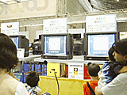●ぐるぐるガラクターズ (アトラス) たんなる”ガラクタ”が、主人公を守るモンスターに変身するという、ちょっと変わったRPG。ふたつの世界を行き来しながら、頼もしい”ガラクタ”を集めてください。 |
| 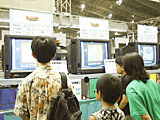●エレメンタルテイル ジャックの大冒険 ～大魔王の逆襲～ (イマジニア)
”エーテルの書”を巡って、波乱に満ちた冒険を楽しめる本格派RPG。魅力的なシナリオや背景世界など、しっかりと作り込まれている割には、とっつきやすいシンプルなシステムで気軽にプレイできます。 |
| 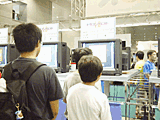●ゲームボーイ ドラゴンクエストI･II (エニックス) 不朽の名作が、ついにゲームボーイでよみがえります。ファンはもちろん、かつての｢ドラクエ｣をしらない小さな子供たちにも、ぜひ遊んで欲しい作品ですね。 |
| 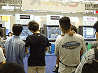●R･TYPE DX(仮) (エポック社) アーケードで話題を呼んだシューティングゲームのリメイク版。初代と｢Ⅱ｣、それにアレンジ版のDXも加わって、遊び応え十分です。敵キャラのデザインは、今見ても斬新ですね。 |
| 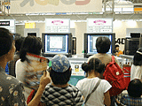●シルバニアファミリー ～おとぎの国のペンダント～ (エポック社) おとぎの国で、妖精のペンダントを届けるための楽しい冒険が始まります。おなじみ｢シルバニアファミリー｣の世界は、ゲームボーイでも子供たちに大人気です。 |
| 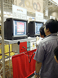●メロディキッズ(仮) (エポック社) リズムに合わせて障害物を弾き飛ばす楽しいゲーム。アクション＋音楽ゲームって感じかな。 |
| 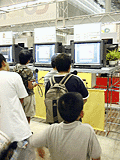●テトリスアドベンチャー すすめミッキーと仲間たち (カプコン) ミッキーのテトリスです。いろんなキャラクターと対戦しながらコインを集める、クエストモードが楽しいよ。 |
| 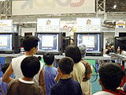●爆走戦記 メタルウォーカー (カプコン) 男の子たちに人気の”メタルウォーカー”がRPGになりました。もちろん対戦機能もあり、ベースキャンプ交換システムでいつでも友達とバトルできるんだって。 |
| 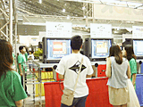●ディジャヴ (コトブキシステム) 本格的な推理ものアドベンチャーゲーム。1940年代のアメリカが舞台という、シブイ作品です。ゲームボーイカラー専用。 |
| 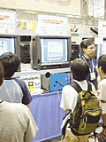●がんばれゴエモンGB(仮) (コナミ) あのゴエモンが、今度は”もののけ”たちと旅をします。全国を巡りながら"もののけ"を集めて、敵を倒していくというRPG。がんばって、すべての”もののけ”を集めてください。 |
| 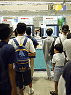●筋肉番付GB(仮) (コナミ) 現在放送中の人気番組”筋肉番付”がゲームになりました。小学生に人気のある競技を中心に、筋肉を使わず”筋肉番付”が楽しめます。 |
| 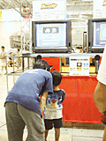●銃鋼戦記 バレットバトラー (コナミ) 巨大な武装戦士、”バレットバトラー”を操りながら冒険を続けるRPG。がんばって、伝説のバトラーを探してください。 |
| 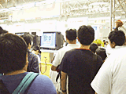●ビートマニアGB2(仮) (コナミ) リズムゲームという新しいジャンルを確立した｢ビートマニア｣。そのゲームボーイ版第2弾が登場します。今回は小学生たちの間ではやっているJ-POPやアニメソングが中心になってます。 |
| 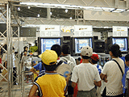●スピーディーゴンザレス (サン電子) アメリカの人気アニメで活躍しているスピーディーゴンザレスが、コミカルなトラップに挑戦するアクションゲーム。アニメを知らない人でも、可愛い画面と簡単な操作で気軽にプレーできます。 |
| 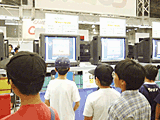●ダフィーダック(仮) (サン電子) こちらも子供たちに人気のキャラクター、”ダフィーダック”。彼がお金持ちになるため、ダイナマイトをたくさん抱えて旅に出ます。ちょっと変わったアクションゲームですね。 |
| 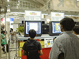●語楽王 TANGO! (J･ウイング) 音楽のタンゴじゃなくて、言葉の”単語”。カタカナ、ひらがなのパネルを上下左右に並べて単語を作っていく、単純だけど難しく、誰でも楽しめる文字パズルです。 |
|
|